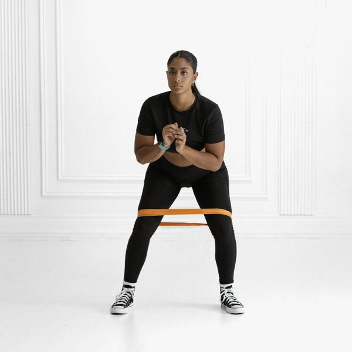
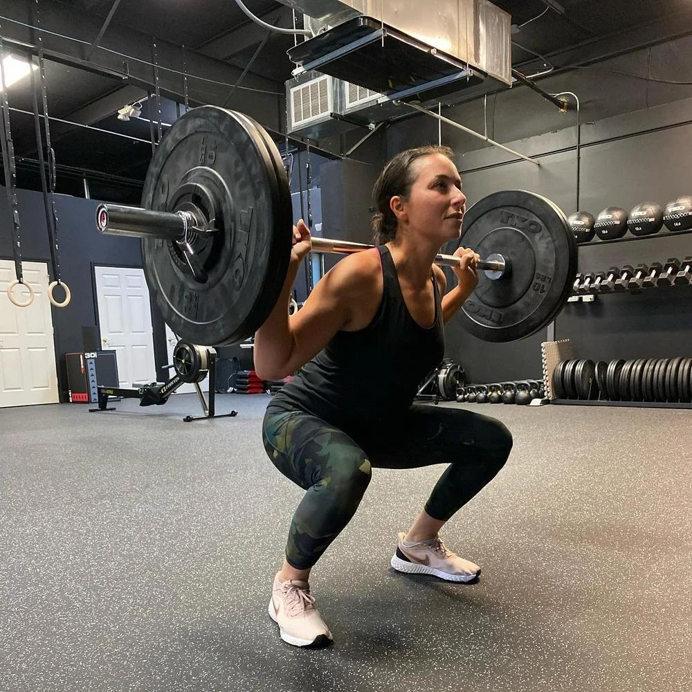
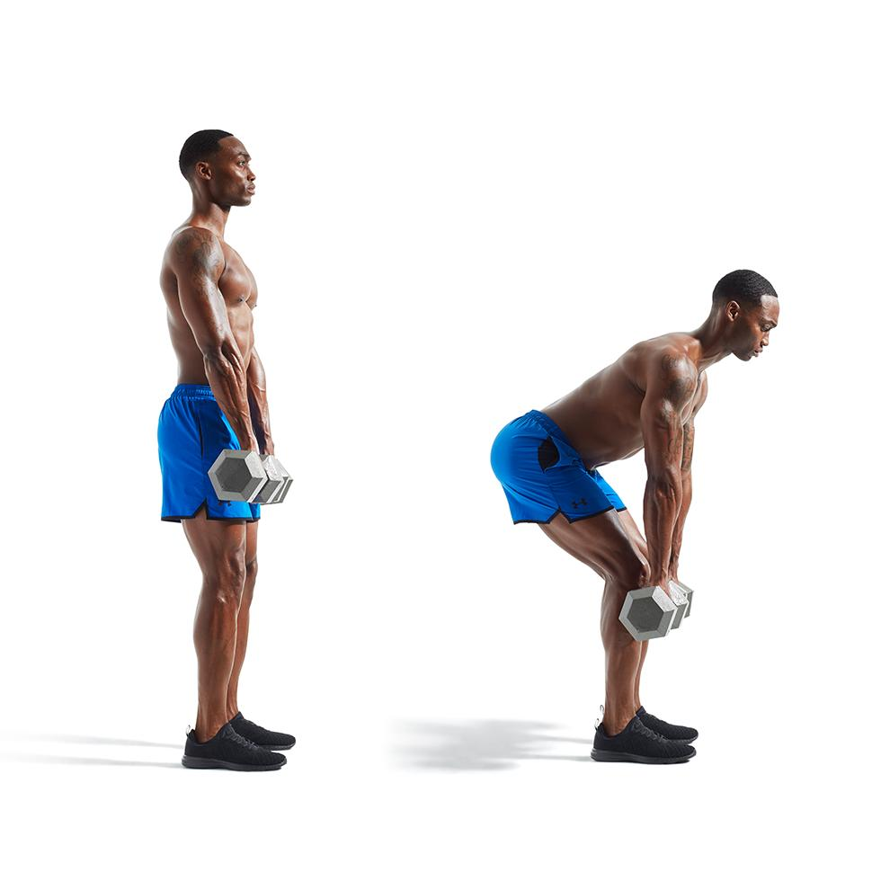
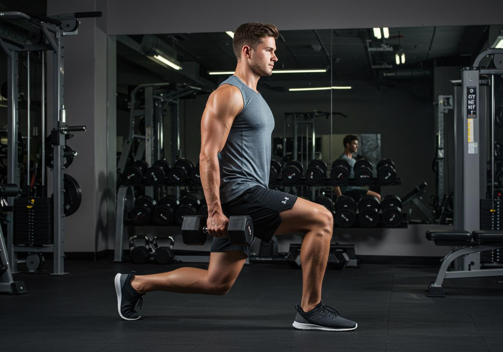
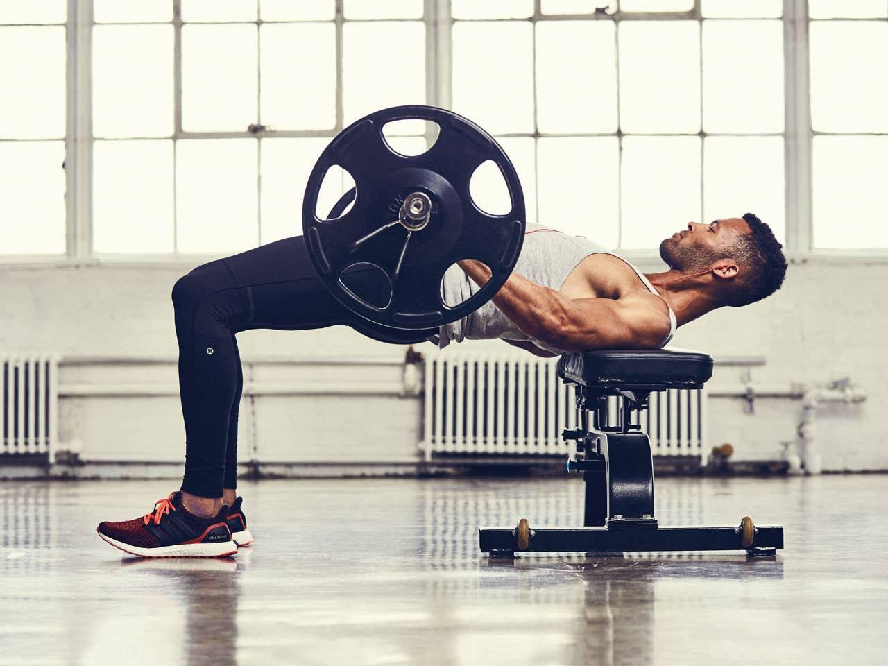
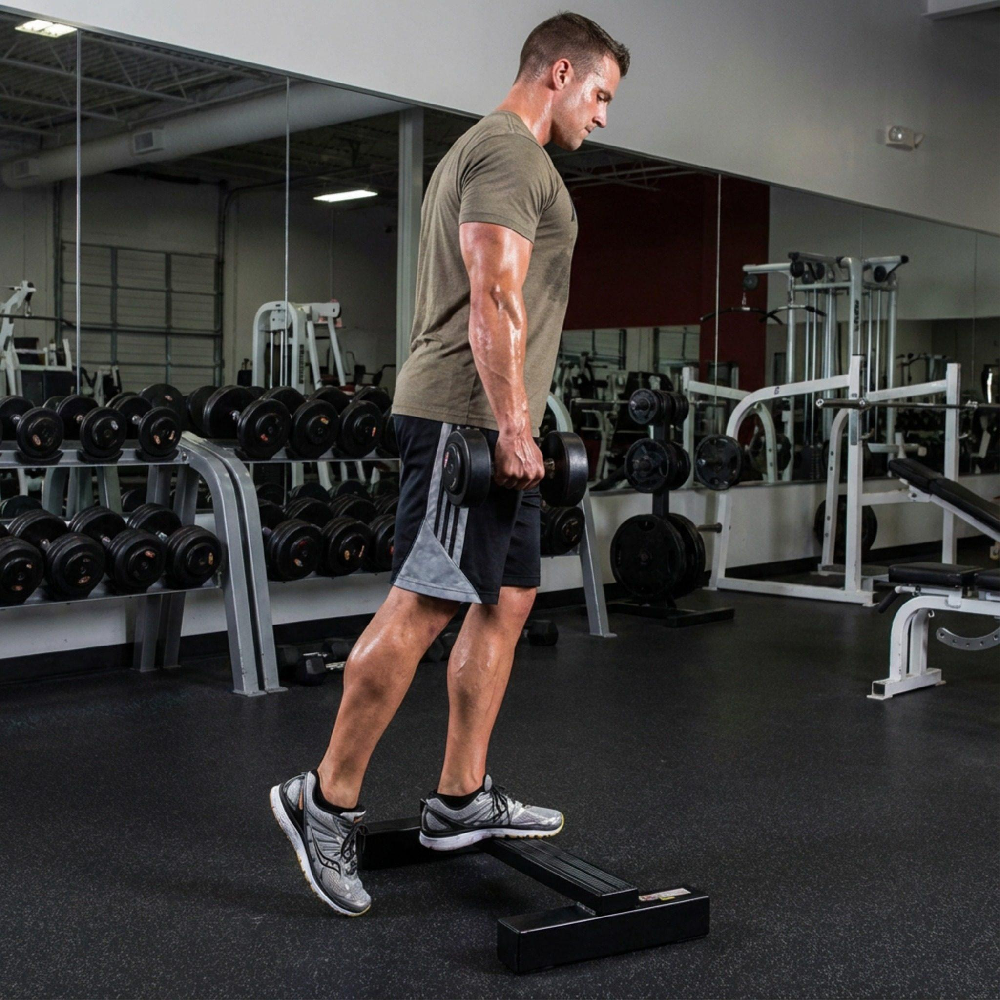
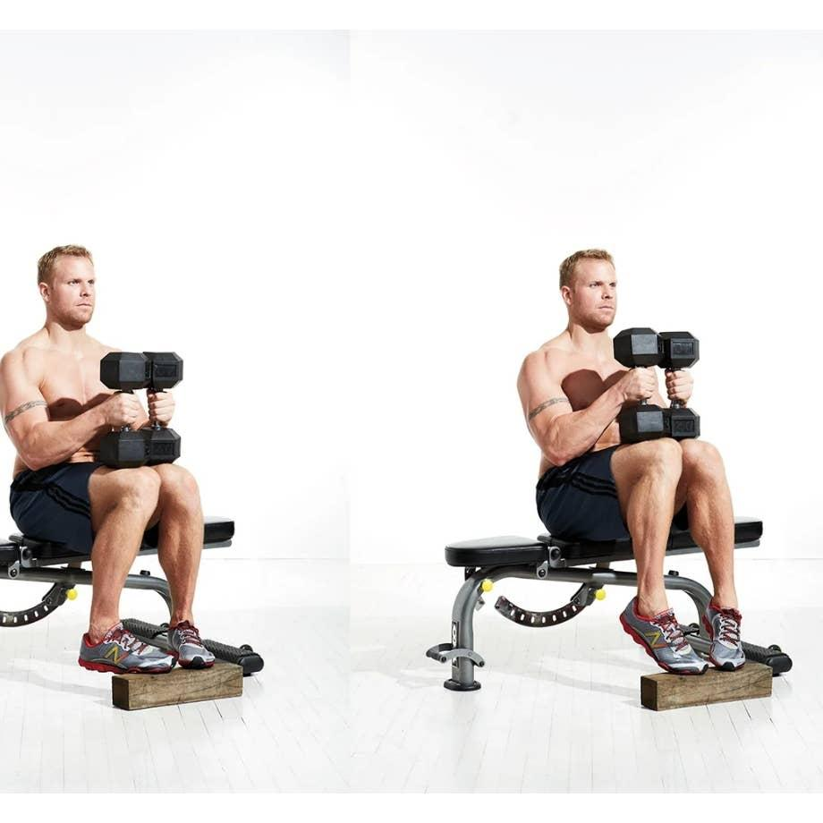
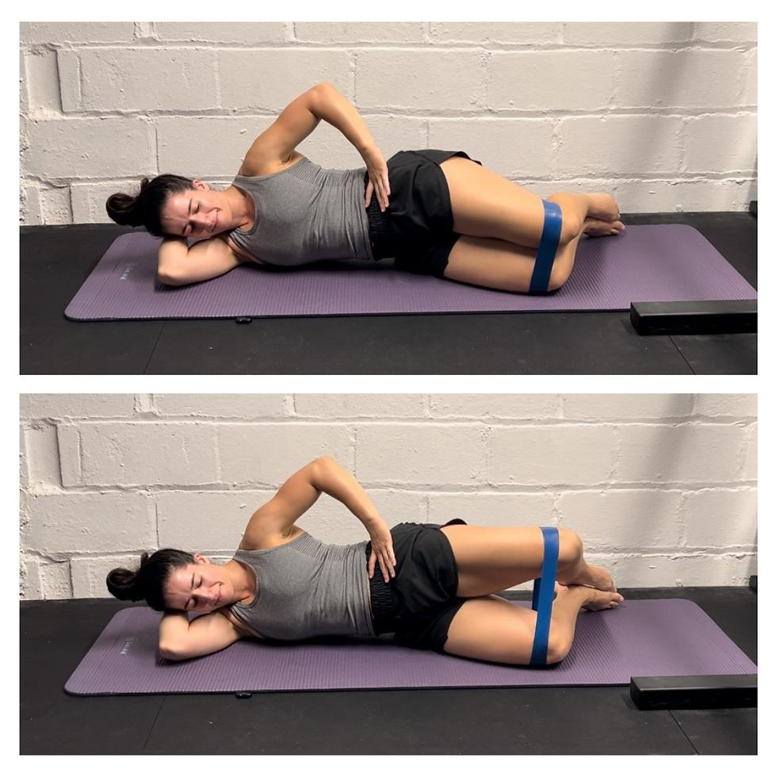
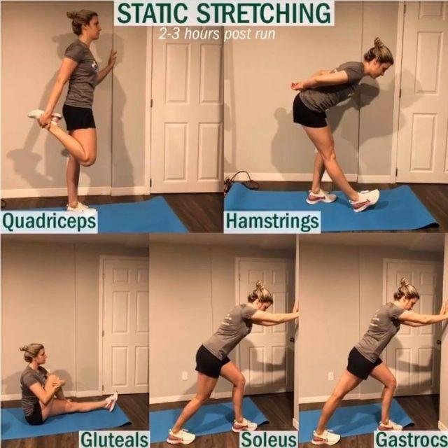

马拉松专项：30分钟腿部与臀部力量训练
含动作示意图片。使用弹力带、哑铃和杠铃，强化跑步所需的下肢力量、髋部控制与单腿稳定能力。
30分钟热身3分钟 · 主训练24分钟 · 收尾3分钟
每周1–2次两次训练尽量间隔48小时以上
保留2–3次余力以动作质量为先，不练到力竭
图片说明：动作图片从 Wikimedia Commons 加载，打开 HTML 时需要联网。若某张图片无法显示，可尝试联网刷新页面；动作文字说明仍完整保留。
一、30分钟训练流程

弹力带侧向走 / 热身示意
00:00–03:00 · 热身
热身：弹力带侧向走 + 徒手深蹲
侧向走：2组 × 每侧10步；徒手深蹲：1组 × 15次
目标：臀中肌、髋部与膝关节周围肌肉
- 弹力带放在膝盖上方或脚踝处，膝盖微屈，小步侧向移动。
- 深蹲时脚掌踩稳，膝盖方向与脚尖一致。

杠铃深蹲示意
03:00–07:00 · 动作1
1. 杠铃深蹲
3组 × 8次
目标：股四头肌、臀大肌、内收肌
- 下蹲时膝盖顺着脚尖方向移动，保持脚掌稳定。
- 起身时平稳发力，不要突然锁死膝盖。
- 组间休息约45秒；选择能保持标准动作、最后几次有挑战的重量。

罗马尼亚硬拉示意
07:00–11:00 · 动作2
2. 哑铃罗马尼亚硬拉
3组 × 10次
目标：腘绳肌、臀大肌、竖脊肌
- 臀部向后推，膝盖微屈，哑铃沿大腿下降。
- 背部保持自然中立，不必追求哑铃触地。
- 组间休息约45秒。

反向弓步示意
11:00–15:00 · 动作3
3. 哑铃反向弓步
2组 × 每侧8次
目标：股四头肌、臀大肌、臀中肌、单腿稳定肌群
- 向后迈步，前脚全脚掌踩稳，躯干自然直立。
- 左右两侧都完成后休息45–60秒。
- 刚开始可徒手完成，稳定后再加哑铃。

臀推示意
15:00–18:00 · 动作4
4. 臀推
2组 × 12次
目标：臀大肌、髋伸肌群
- 上背靠稳长凳，顶部停留约1秒并收紧臀部。
- 避免用腰部过度后仰；杠铃需垫软垫保护髋部。
- 组间休息30–45秒。没有杠铃时可用哑铃或徒手臀桥替代。

单腿站姿提踵示意
18:00–21:00 · 动作5
5. 单腿站姿提踵（膝盖伸直）
2组 × 每侧12次
目标：腓肠肌、小腿与踝关节力量
- 扶墙保持平衡，脚跟充分抬起，再缓慢下降。
- 适应后可手持哑铃增加负荷；避免弹跳。
- 左右两侧完成后算一组。

屈膝提踵示意
21:00–24:00 · 动作6
6. 屈膝提踵
2组 × 15次
目标：比目鱼肌（小腿深层）
- 坐姿，膝盖弯曲约90°，可将轻哑铃放在膝盖上方。
- 缓慢抬起和放下脚跟；没有器械时可做屈膝站姿提踵。

弹力带蚌式开合示意
24:00–27:00 · 动作7
7. 弹力带蚌式开合
2组 × 每侧15次
目标：臀中肌、臀小肌、髋外旋肌
- 侧躺，膝盖弯曲、双脚并拢，打开上侧膝盖。
- 骨盆不要向后翻，动作缓慢且可控。
- 左右两侧都完成后算一组。

训练后拉伸示意
27:00–30:00 · 收尾
放松：股四头肌、臀部、小腿
每个动作每侧约20秒
- 站姿股四头肌拉伸：左右各20秒。
- 臀部拉伸：左右各20秒。
- 小腿拉伸：左右各20秒；剩余时间轻松走动、调整呼吸。
二、肌群覆盖表
| 肌肉 / 部位 | 对应动作 |
|---|---|
| 臀大肌 | 深蹲、罗马尼亚硬拉、反向弓步、臀推 |
| 臀中肌、臀小肌 | 弹力带侧向走、反向弓步、蚌式开合 |
| 股四头肌（大腿前侧） | 深蹲、反向弓步 |
| 腘绳肌（大腿后侧） | 罗马尼亚硬拉 |
| 大腿内侧内收肌 | 深蹲、反向弓步 |
| 腓肠肌（小腿表层） | 单腿站姿提踵 |
| 比目鱼肌（小腿深层） | 屈膝提踵 |
| 足踝稳定肌群 | 单腿提踵、弓步中的稳定控制 |
| 髋屈肌 | 弓步中的髋部控制；本计划未单独进行高负荷髋屈训练 |
三、负重、频率与跑步安排
- 负重选择：每组结束时保留约2–3次余力，动作不变形、不憋气硬顶。
- 训练频率：先每周1次；恢复良好后可增至每周2次，两次间隔尽量达到48小时以上。
- 与跑步搭配：可安排在轻松跑之后，或与间歇跑、节奏跑错开，避免影响关键跑课。
- 赛前调整：比赛前一周减少力量训练量，避免明显肌肉酸痛。
- 安全提示：若动作引起膝、髋、跟腱或腰部疼痛，应停止并调整动作；有伤病史时先咨询专业人士。
可选进阶：适应后可增加胫骨前肌训练（靠墙脚尖上勾）和单腿台阶下蹲，进一步训练踝关节控制与跑步落地稳定性。若30分钟严格封顶，可用它们替换部分辅助动作，而不是压缩主项休息时间。